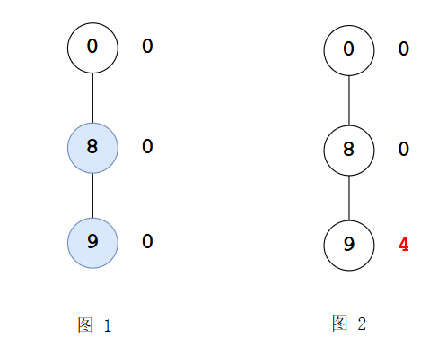
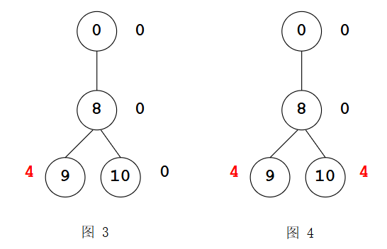
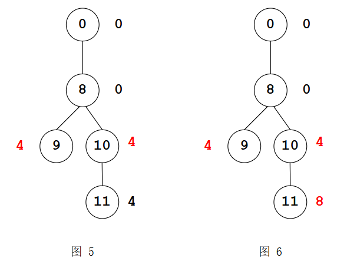
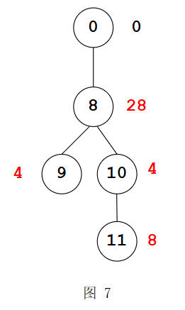
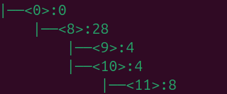
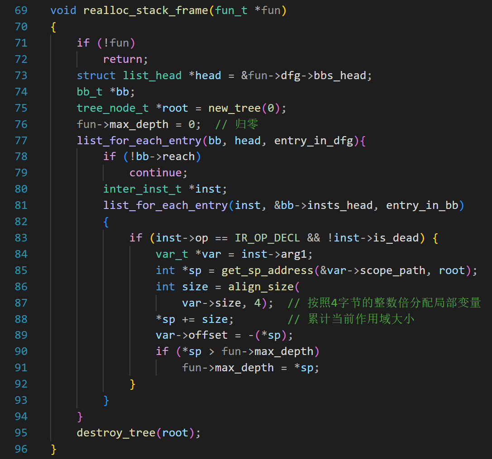

第20天：为局部变量分配栈偏移
第20天：为局部变量分配栈偏移
函数调用时栈的变化
在生成汇编代码的时候，全局变量的内存靠数据段定义（以后会讲）。但是，局部变量的内存地址是如何确定的呢？
请看下面的代码：
1 | |
在调用 add 函数之前，栈是这样的（每一行表示4个字节）：
1 | |
1、main 准备参数
按照 cdecl 约定，参数从右到左压栈：
1 | |
压栈用的汇编代码是
1 | |
2、call
汇编代码是call add
利用 call 指令发起函数调用
call 指令会把返回地址压栈；返回地址就是 “call add” 这句指令的下一条指令的地址
1 | |
然后，就跳转到了被调用的函数。
3、被调用函数开头的代码一般是这样的：
1 | |
这三行代码我们一行一行看，首先是 push ebp
栈变化为这样：
1 | |
push epb 是为了把 caller 的 epb 存起来(为了将来恢复它的值)，因为被调用函数会设置自己的 ebp，并用它来寻址；
mov ebp, esp
这句执行完后，EBP 和 ESP 指向同一个位置
1 | |
再然后，被调用函数会根据局部变量对内存的消耗情况调整 esp 的值。假设用了 2 个整型变量，那么栈布局如下：
1 | |
所以，根据这个图，要访问传入的参数 a 和 b，应该用 ebp+8, ebp+12 寻址。
基本原理
在创建函数对象(new_fun 函数)的时候，就有代码
1 | |
第1行就指定了偏移 8，第 9 行设置参数的偏移，第 10 行加 4，后面翻译成汇编的时候，参数就会有偏移 ebp+8, ebp+12 等
要访问局部变量 1 和 2，应该用 ebp-4, ebp-8 寻址。这里的 ebp-4, ebp-8 就是编译器为局部变量 1 和 2 分配的内存地址。
为局部变量分配内存地址，是编译过程的必要环节。可以在语法分析的时候做，也可以在优化完成后、生成汇编代码前。
我们选择在优化完成后、生成汇编代码前。因为经过优化，一些局部变量没有用了，就算在语法分析阶段完成了地址分配，优化后还需要重新分配。
请看下面的代码：
1 | |
虽然这段代码没有什么用，但是能说明问题就好。
抛开参数，我们要关注的是非参数的局部变量。
把此代码翻译成中间代码并优化后，没有生成中间变量，涉及的变量和作用域如下（按照变量定义的顺序）
1 | |
请问对于 c,e,f,arr,它们在栈上的地址是多少？
我们可以根据下面的栈帧偏移算法构建一棵树，在构建的过程中计算变量的偏移。
1、创建树根，它对应偏移 0
2、遍历函数的中间代码，找到 decl 指令（跳过无效的指令），取出变量的作用域
3、从树根开始，匹配作用域；如果作用域节点不存在，则创建，新创建的节点的偏移继承父节点的偏移
4、取出作用域匹配结束时的最末尾的节点，把变量的大小加到节点的偏移上，并把新的偏移作为变量的栈偏移
5、跳转到 2，直到处理完所有的 decl 指令。
下面为读者演示一下。

取出变量 c 的作用域 0/8/9
先匹配树根，然后尝试匹配 8，没有 8，所以在根的下面创建节点 8，它的偏移继承父节点 0，偏移为 0（标注在节点右边）
再尝试匹配 9，没有 9，在 8 的下面创建节点 9，它的偏移继承父节点 8，偏移为 0
0/8/9 匹配完毕，最后一个节点是 9，变量 c 占 4 个字节，把 4 加到节点 9 的偏移值 0 上，得到 4，所以变量 c 的偏移就是 4；
取出变量 e, 它的作用域是 e: /0/8/10
节点 0 和 8 已经有了，不用创建；但是 10 没有，在 8 的下面创建节点 10，节点 10 的偏移继承父节点 8，偏移为 0（图3）

变量 e 占 4 个字节，把 4 加到节点 10 的偏移值 0 上，得到 4，所以变量 e 的偏移就是 4；(图 4)
取出变量 f,它的作用域是 /0/8/10/11
节点0，8，10 都有，需要创建节点 11，在 10 的下面创建节点 11，节点 11 的偏移继承父节点 10，偏移为 4（图5）

变量 f 占 4 个字节，把 4 加到节点 11 的偏移值 4 上，得到 8，所以变量 e 的偏移就是 8；(图 6)
取出变量 arr，它的作用域是 /0/8
arr 是数组，有 7 个元素，它的大小是 28 字节。
节点 0 和 8 已经有了，最后一个节点是 8，把 28 加到0 上，得 28，所以 arr 的偏移是 28 (图 7)

至此，此函数局部变量的偏移就计算完成了。
在生成汇编代码的时候，用 ebp-offset 寻址对应的变量。
代码讲解
回忆一下，我们之前用到的数据结构有链表，哈希表，不过这两种数据结构都不合适，所以，我们要造出新的轮子——树结构。

如何表示一棵树呢？可以用“孩子链表表示法”。
这种表示方法和我们熟悉的“目录树”很像。
如上图，尖括号里面的就是节点，冒号后面的是偏移值。
节点 0 有一个孩子是 8，我们就在 0 下面挂一个链表，把节点 8 加入这个链表。
节点 8 也有自己的孩子，是 9 和 10，那就在节点 8 下面也挂个链表，把 9 和 10 都加上去。
所以 8 的正下方有两个 “|——”。
节点 11 是个单身汉，没有孩子，所以它下面没有链表。
同理，节点 9 也是单身汉。所谓“孩子链表表示法”，就是爸爸有一个链表的头节点，他的孩子挂在链表上。
爸爸的孙子在哪里？那就去看他的每一个孩子所持有的链表。
1 | |
以上结构体就是树的节点，第三行的 id 是作用域的编号，比如图中的 0，8，9 等
第 4 行的 sp 是偏移值
第 5 行的 children 是孩子链表的头节点
第 6 行的 parent 指向此节点的父节点
第 7 行是用于加入孩子链表的 entry
构造树根的代码如下
1 | |
参数 id 是作用域的编号。
第 8 行，树根的偏移为 0
第 9 行，初始化链表为空链表，也就是说没有一个孩子，是一个单身汉。
回顾刚才计算偏移的过程，首先是匹配作用域，其实就是查找某个节点，所以我们要写一个查找节点的函数。
1 | |
第 6 行，遍历父亲的孩子链表，如果找到编号为 id 的节点，就返回这个节点的地址。
如果找不到，我们需要创建编号为 id 的新节点。创建新节点的函数是 new_child
1 | |
第 9 行，初始化新节点的孩子链表，此时他一个孩子都没有。
第 10 行，填写新节点的 id
第 11 行，填写他的父亲
第 12 行，他的偏移来自父亲
第 13 行，把新节点加入父亲的孩子链表，算是认了个爹。
接下来，我们要写作用域匹配的代码，思路就是根据遍历的作用域（其实是个数组），依次取出每个元素，用元素值作为 id,从树根开始查，肯定能返回一个节点，再把这个返回的节点作为新的父亲，在他下面查下一个 id，直到查完所有的 id，并返回最后一个 id 对应的节点
代码如下：
1 | |
此函数有2个参数，第一个参数是变量的作用域，第二个参数是树根节点。
第 4 行，让 parent 变量等于树根的地址。
第 8 行，因为作用域都是从 0 开始的，我们跳过 0，从后面开始查。
第 9 行，调用 find_node_by_id，把 id 和父节点传进去，得到 child，这个 child 要么是本来就有的节点，要么是新创建的节点，不过无所谓，把 child 赋值给 parent，作为新的父节点，在它下面继续查找下一个 id
第 13 行，此时 child 就是匹配完成的最后一个节点，因为要使用它的 sp，且要修改 sp,所以返回 &child->sp
经过上面的铺垫，终于来到给变量分配栈偏移的函数了。

第 75 行，构造树根。
第 76 行，让 fun->max_depth 归零，我们会在计算的过程中跟踪 max_depth 的最大值。
第 77 行，遍历所有的中间指令，跳过不可达的块
第 81 行，遍历基本块里面的指令，找到 decl 语句并排除死代码。
第 85 行，调用刚才讲的 get_sp_address，得到匹配完成的最后一个节点的 sp 字段的地址。
第 86 行，把变量的大小按照 4 的整数倍向上对齐
第 88 行，把对齐后的大小加到 sp 上，注意，sp 的值也跟着变化。
第 89 行，填写变量的 offset 字段。
第 90~91，跟踪 sp 的最大值。因为这个值是函数栈的最大深度，在翻译为汇编的时候要用到。
本文的内容到这里就结束了。后面我们学习如何把中间指令翻译为汇编指令。